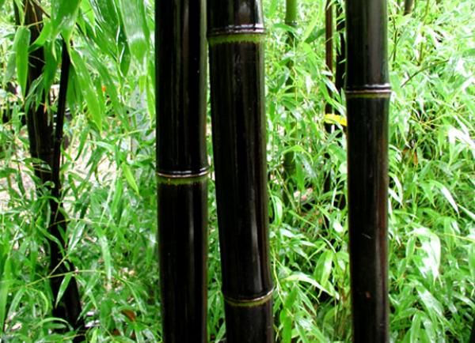

Черный бамбук
Как и многие виды бамбука, черный бамбук синхронизирует свое цветение, при этом цветение происходит каждые 40-120 лет. Согласно одному источнику, он цвел каждые 120 лет «с тех пор, как велись записи».Он монокарпический, то есть после цветения растения погибают.
Бамбук Хенон цветет каждые 120 лет и, по прогнозам, зацветет в 2020-х годах. Поскольку он широко распространен в Японии, отмирание его насаждений может вызвать серьезные социальные и экологические проблемы. Кроме того, бамбук Хенон редко завязывает плодородные семена, поэтому неясно, как этот вид выживал в течение длительных периодов в Японии.
Он используется для производства пиломатериалов, продуктов питания и музыкальных инструментов, среди прочего, в районах Китая, где он произрастает, а также во всем мире